CODING AGENTS AS PIXEL WORLD MODELS
traex/GPT-6.1-Sol · 0194
点击播放 · 原生 RGB 像素
逐轮保存的候选
回放视频、检查图与代码变化。
每份候选均可单独播放。实际图片检查记录在下方工具轨迹中。
候选 01播放与检查图
点击播放 · 原生 RGB 像素

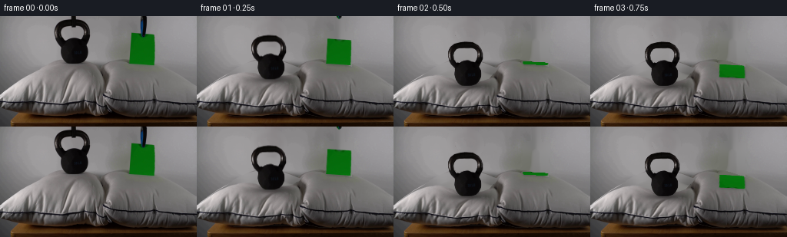
展开代码变化
--- 上一保存版本
+++ 本次保存版本
@@ -0,0 +1,152 @@
+from pathlib import Path
+import numpy as np
+from PIL import Image, ImageDraw, ImageFilter
+import cv2
+from scipy.ndimage import gaussian_filter
+import artifact_io
+
+ROOT=Path(__file__).resolve().parent
+W,H=256,144
+S=4
+first=np.array(Image.open(ROOT/'first_frame.png').convert('RGB'))
+Y,X=np.mgrid[:H,:W].astype(np.float32)
+
+def polygon(points, scale=S):
+ im=Image.new('L',(W*scale,H*scale),0)
+ ImageDraw.Draw(im).polygon([(round(x*scale),round(y*scale)) for x,y in points], fill=255)
+ return np.array(im.resize((W,H),Image.Resampling.LANCZOS)).astype(np.float32)/255
+
+# The outlines and appearance are sampled exclusively from the supplied photograph.
+pillow_top=[(0,103),(12,94),(24,85),(38,77),(52,67),(65,61),(76,58),(86,58),(99,59),(112,59),(123,63),(133,67),(138,65),(149,59),(161,57),(173,57),(184,60),(199,65),(213,69),(230,78),(244,87),(255,94)]
+pillow_bottom=[(255,131),(239,132),(206,132),(182,132),(158,131),(145,128),(139,126),(134,130),(126,130),(117,128),(109,128),(96,128),(75,130),(48,130),(28,127),(13,123),(0,119)]
+pmask=polygon(pillow_top+pillow_bottom)
+# Black iron outline; preserve the real handle opening.
+bell_outline=[(94,4),(103,5),(110,9),(114,14),(116,20),(116,27),(113,33),(111,37),(114,42),(114,50),(111,56),(107,60),(101,62),(89,62),(84,59),(81,54),(79,47),(80,39),(75,34),(72,29),(70,23),(71,16),(74,11),(79,7),(87,5)]
+bellmask=polygon(bell_outline)
+hole=polygon([(85,13),(94,13),(102,13),(106,17),(109,21),(108,27),(106,31),(101,30),(97,28),(91,28),(86,30),(82,32),(79,28),(78,22),(79,18),(82,14)])
+bellmask*=1-hole
+# Refine the antialiased boundaries using foreground/background contrast.
+roi=(X>68)&(X<119)&(Y>2)&(Y<64)
+contrast=np.clip((130-first.mean(2))/65,0,1)
+bellmask*=contrast
+# Reconstitute the short top handle bridge which is occluded by the support.
+bellrgb=first.copy().astype(np.float32)
+for y in range(4,14):
+ for x in range(93,100):
+ if bellmask[y,x]>.1:
+ f=(x-92)/9
+ bellrgb[y,x]=bellrgb[y,91]*(1-f)+bellrgb[y,101]*f
+
+paperpts=[(171,22),(201,24),(200,64),(168,62)]
+papermask=polygon(paperpts)
+# Preserve the sheet photograph while filling the small area hidden by its blue clip.
+paperrgb=first.copy()
+clip_patch=np.zeros((H,W),np.uint8)
+clip_patch[20:29,182:190]=255
+paperrgb=cv2.inpaint(paperrgb,clip_patch,3,cv2.INPAINT_TELEA).astype(np.float32)
+# Extract the visible suspension tools separately.
+rodmask=polygon([(93,0),(99,0),(99,13),(94,14)])
+clipmask=polygon([(183,0),(190,0),(190,11),(189,20),(188,26),(185,28),(182,25),(182,16),(182,6)])
+# Remove the moving subjects from the fixed scene to reveal the original wall.
+erase=((bellmask+papermask+rodmask+clipmask)>.015).astype(np.uint8)*255
+erase=cv2.dilate(erase,np.ones((3,3),np.uint8))
+clean=cv2.inpaint(first,erase,5,cv2.INPAINT_TELEA).astype(np.float32)
+
+# Analytic wall continuation is only used where objects uncover previously hidden wall.
+wallvalid=(pmask<.01)&(erase==0)&(Y<96)
+xx=(X-128)/128; yy=(Y-50)/80
+terms=[np.ones_like(X),xx,yy,xx*xx,xx*yy,yy*yy,xx**3,xx*xx*yy,xx*yy*yy,yy**3]
+A=np.stack(terms,axis=-1)
+co=np.linalg.lstsq(A[wallvalid],first[wallvalid].astype(float),rcond=None)[0]
+wall=(A@co).astype(np.float32)
+# Use a smooth photograph-derived residual rather than creating a flat new patch.
+res=(first.astype(np.float32)-wall)*wallvalid[...,None]
+res=gaussian_filter(res,(5,5,0))/np.maximum(gaussian_filter(wallvalid.astype(np.float32),5)[...,None],.01)
+wall+=res
+back=clean.copy()
+back=back*(1-pmask[...,None])+wall*pmask[...,None]
+# Object holes in the wall are reconstructed by the same continuous wall field.
+wallholes=(erase>0)&(pmask<.3)
+back[wallholes]=wall[wallholes]
+clean[wallholes]=wall[wallholes]
+# Fill the few pixels of pillow crown originally obscured by the bell and paper.
+
+
+def overlay(dst, rgb, alpha):
+ a=np.clip(alpha,0,1)[...,None]
+ return dst*(1-a)+rgb*a
+
+def shift_layer(rgb, alpha, dx=0,dy=0):
+ M=np.float32([[1,0,dx],[0,1,dy]])
+ a=cv2.warpAffine(alpha,M,(W,H),flags=cv2.INTER_LINEAR)
+ prem=cv2.warpAffine(rgb*alpha[...,None],M,(W,H),flags=cv2.INTER_LINEAR)
+ return prem/np.maximum(a[...,None],1e-6),a
+
+def displacement(x,y,amount):
+ # Finite compression of the left pillow, pinned at the table and central seam.
+ vertical=np.clip((128-y)/68,0,1)**1.12
+ sigma=30+np.clip(y-65,0,60)*.03
+ lateral=np.exp(-.5*((x-96)/sigma)**2)
+ seamfade=np.clip((140-x)/16,0,1)
+ return amount*vertical*lateral*seamfade
+
+frames=[first]
+for idx in range(1,20):
+ t=idx/4
+ # Critically damped loading with one slight fabric/foam overshoot.
+ elapsed=max(0,t-.04)
+ amount=29*(1-np.exp(-5.8*elapsed)*(np.cos(4.8*elapsed)+.50*np.sin(4.8*elapsed)))
+ amount=max(0,amount)
+ # Invert the continuous cloth displacement field; the texture and piping move together.
+ sy=Y.copy()
+ for k in range(16):
+ sy=.4*sy+.6*(Y-displacement(X,sy,amount))
+ # A modest lateral expansion as the filling is displaced by the load.
+ side=(X-96)*.027*(amount/29)*np.exp(-((X-96)/48)**2)*np.exp(-((sy-102)/31)**2)
+ sx=X-side
+ cloth=cv2.remap(clean,sx.astype(np.float32),sy.astype(np.float32),cv2.INTER_CUBIC,borderMode=cv2.BORDER_REFLECT)
+ pa=cv2.remap(pmask,sx.astype(np.float32),sy.astype(np.float32),cv2.INTER_LINEAR,borderMode=cv2.BORDER_CONSTANT)
+ # The depressed fabric is gently shaded inside the deepened bowl.
+ dent_y=60+amount
+ shade=.10*(amount/29)*np.exp(-.5*((X-96)/24)**2-.5*((Y-(dent_y+5))/11)**2)
+ cloth*=1-shade[...,None]
+ scene=overlay(back,cloth,pa)
+ # Soft contact shadow tracks the heavy body.
+ bell_dy=displacement(np.float32(96),np.float32(61),amount)
+ bellbottom=61+bell_dy
+ shadow=np.exp(-.5*((X-97)/18)**2-.5*((Y-(bellbottom+1.0))/2.6)**2)
+ scene*=1-(.29*shadow*pa)[...,None]
+ br,ba=shift_layer(bellrgb,bellmask,0,bell_dy)
+ scene=overlay(scene,br,ba)
+ # Paper released at the same instant: tip under gravity onto the right pillow,
+ # which is effectively undeformed by the sheet's negligible weight.
+ theta=np.deg2rad(102)*(1-np.exp(-(elapsed/.46)**2))
+ if elapsed>.85:
+ theta+=np.deg2rad(3)*np.exp(-3*(elapsed-.85))*np.sin(9*(elapsed-.85))
+ freeY=-40*np.cos(theta)+15*np.sin(theta)
+ stretch=1+.13*np.sin(theta)
+ dst=np.float32([[184.5+(171-184.5)*stretch-1.6*np.sin(theta),62+freeY],
+ [184.5+(201-184.5)*stretch-1.6*np.sin(theta),64+freeY],
+ [200,64],[168,62]])
+ transform=cv2.getPerspectiveTransform(np.float32(paperpts),dst)
+ # At the exact edge-on instant the surface can be represented by a thin green line.
+ alpha=cv2.warpPerspective(papermask,transform,(W,H),flags=cv2.INTER_LINEAR)
+ pr=cv2.warpPerspective(paperrgb*papermask[...,None],transform,(W,H),flags=cv2.INTER_LINEAR)
+ pr/=np.maximum(alpha[...,None],1e-6)
+ pr*=1+.08*np.sin(theta)
+ ps=cv2.warpAffine(alpha,np.float32([[1,0,1],[0,1,1.2]]),(W,H))
+ ps=gaussian_filter(ps,1.2)
+ scene*=1-(.20*ps*pa)[...,None]
+ scene=overlay(scene,pr,alpha)
+ # Both support grips withdraw upwards without introducing a person or changing the camera.
+ upward=115*elapsed
+ if upward<29:
+ rr,ra=shift_layer(first.astype(np.float32),rodmask,0,-upward)
+ scene=overlay(scene,rr,ra)
+ cr,ca=shift_layer(first.astype(np.float32),clipmask,0,-upward)
+ scene=overlay(scene,cr,ca)
+ frames.append(np.uint8(np.clip(np.round(scene),0,255)))
+frames=np.stack(frames)
+artifact_io.save(frames,ROOT)
+# A larger view is convenient for local visual inspection.
+Image.open(ROOT/'inspection.png').resize((1024*1,330*1)).save(ROOT/'.tmp/overview.png')
候选 02播放与检查图
点击播放 · 原生 RGB 像素
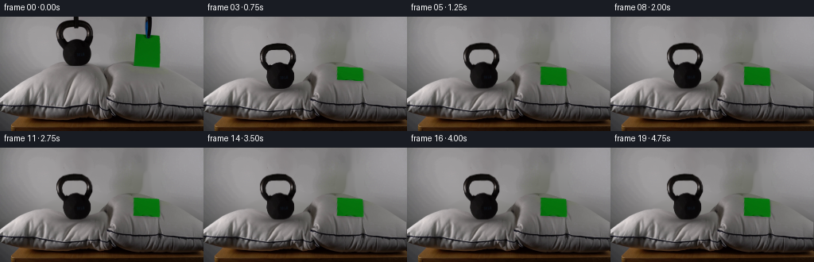
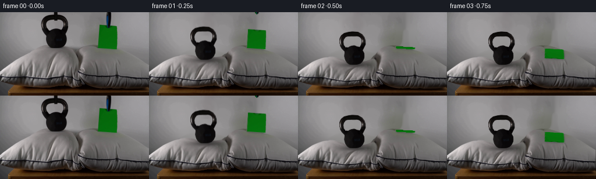
展开代码变化
--- 上一保存版本 +++ 本次保存版本 @@ -53,7 +53,8 @@ clean=cv2.inpaint(first,erase,5,cv2.INPAINT_TELEA).astype(np.float32) # Analytic wall continuation is only used where objects uncover previously hidden wall. -wallvalid=(pmask<.01)&(erase==0)&(Y<96) +expanded_pillow=cv2.dilate((pmask>.01).astype(np.uint8),np.ones((9,9),np.uint8)) +wallvalid=(expanded_pillow==0)&(erase==0)&(Y<96) xx=(X-128)/128; yy=(Y-50)/80 terms=[np.ones_like(X),xx,yy,xx*xx,xx*yy,yy*yy,xx**3,xx*xx*yy,xx*yy*yy,yy**3] A=np.stack(terms,axis=-1) @@ -64,7 +65,8 @@ res=gaussian_filter(res,(5,5,0))/np.maximum(gaussian_filter(wallvalid.astype(np.float32),5)[...,None],.01) wall+=res back=clean.copy() -back=back*(1-pmask[...,None])+wall*pmask[...,None] +background_fill=((expanded_pillow>0)&(Y<117)).astype(np.float32) +back=back*(1-background_fill[...,None])+wall*background_fill[...,None] # Object holes in the wall are reconstructed by the same continuous wall field. wallholes=(erase>0)&(pmask<.3) back[wallholes]=wall[wallholes]
可观测工具轨迹
实际执行的命令与返回图片。
命令 1exit 0
/bin/bash -lc "ls -la && cat prompt.txt && printf '\\n---RULES---\\n' && cat GENERATION_RULES.md"
命令 2exit 0
/bin/bash -lc "cat artifact_io.py && python - <<'PY'
from PIL import Image
im=Image.open('first_frame.png'); print(im.size)
im.resize((1024,576)).save('.tmp/first_large.png')
PY"命令 3exit 0
/bin/bash -lc "python - <<'PY' import importlib.util for name in ['numpy','scipy','cv2','PIL']: print(name, bool(importlib.util.find_spec(name))) PY"
命令 4exit 0
/bin/bash -lc "python - <<'PY'
from PIL import Image
im=Image.open('first_frame.png')
im.crop((66,0,121,65)).resize((440,520)).save('.tmp/bell.png')
im.crop((160,0,207,70)).resize((376,560)).save('.tmp/paper.png')
PY"命令 5exit 0
/bin/bash -lc "python - <<'PY'
from PIL import Image,ImageDraw
im=Image.open('first_frame.png').resize((1024,576));d=ImageDraw.Draw(im)
for x in range(0,256,10):d.line((x*4,0,x*4,575),fill=(255,0,0),width=1);d.text((x*4,135*4),str(x),fill=(255,255,0))
for y in range(0,144,10):d.line((0,y*4,1023,y*4),fill=(255,0,0),width=1);d.text((0,y*4),str(y),fill=(255,255,0))
im.save('.tmp/grid.png')
PY"命令 6exit 0
/bin/bash -lc "cat > generate.py <<'PY'
from pathlib import Path
import numpy as np
from PIL import Image, ImageDraw, ImageFilter
import cv2
from scipy.ndimage import gaussian_filter
import artifact_io
ROOT=Path(__file__).resolve().parent
W,H=256,144
S=4
first=np.array(Image.open(ROOT/'first_frame.png').convert('RGB'))
Y,X=np.mgrid[:H,:W].astype(np.float32)
def polygon(points, scale=S):
im=Image.new('L',(W*scale,H*scale),0)
ImageDraw.Draw(im).polygon([(round(x*scale),round(y*scale)) for x,y in points], fill=255)
return np.array(im.resize((W,H),Image.Resampling.LANCZOS)).astype(np.float32)/255
# The outlines and appearance are sampled exclusively from the supplied photograph.
pillow_top=[(0,103),(12,94),(24,85),(38,77),(52,67),(65,61),(76,58),(86,58),(99,59),(112,59),(123,63),(133,67),(138,65),(149,59),(161,57),(173,57),(184,60),(199,65),(213,69),(230,78),(244,87),(255,94)]
pillow_bottom=[(255,131),(239,132),(206,132),(182,132),(158,131),(145,128),(139,126),(134,130),(126,130),(117,128),(109,128),(96,128),(75,130),(48,130),(28,127),(13,123),(0,119)]
pmask=polygon(pillow_top+pillow_bottom)
# Black iron outline; preserve the real handle opening.
bell_outline=[(94,4),(103,5),(110,9),(114,14),(116,20),(116,27),(113,33),(111,37),(114,42),(114,50),(111,56),(107,60),(101,62),(89,62),(84,59),(81,54),(79,47),(80,39),(75,34),(72,29),(70,23),(71,16),(74,11),(79,7),(87,5)]
bellmask=polygon(bell_outline)
hole=polygon([(85,13),(94,13),(102,13),(106,17),(109,21),(108,27),(106,31),(101,30),(97,28),(91,28),(86,30),(82,32),(79,28),(78,22),(79,18),(82,14)])
bellmask*=1-hole
# Refine the antialiased boundaries using foreground/background contrast.
roi=(X>68)&(X<119)&(Y>2)&(Y<64)
contrast=np.clip((130-first.mean(2))/65,0,1)
bellmask*=contrast
# Reconstitute the short top handle bridge which is occluded by the support.
bellrgb=first.copy().astype(np.float32)
for y in range(4,14):
for x in range(93,100):
if bellmask[y,x]>.1:
f=(x-92)/9
bellrgb[y,x]=bellrgb[y,91]*(1-f)+bellrgb[y,101]*f
paperpts=[(171,22),(201,24),(200,64),(168,62)]
papermask=polygon(paperpts)
# Preserve the sheet photograph while filling the small area hidden by its blue clip.
paperrgb=first.copy()
clip_patch=np.zeros((H,W),np.uint8)
clip_patch[20:29,182:190]=255
paperrgb=cv2.inpaint(paperrgb,clip_patch,3,cv2.INPAINT_TELEA).astype(np.float32)
# Extract the visible suspension tools separately.
rodmask=polygon([(93,0),(99,0),(99,13),(94,14)])
clipmask=polygon([(183,0),(190,0),(190,11),(189,20),(188,26),(185,28),(182,25),(182,16),(182,6)])
# Remove the moving subjects from the fixed scene to reveal the original wall.
erase=((bellmask+papermask+rodmask+clipmask)>.015).astype(np.uint8)*255
erase=cv2.dilate(erase,np.ones((3,3),np.uint8))
clean=cv2.inpaint(first,erase,5,cv2.INPAINT_TELEA).astype(np.float32)
# Analytic wall continuation is only used where objects uncover previously hidden wall.
wallvalid=(pmask<.01)&(erase==0)&(Y<96)
xx=(X-128)/128; yy=(Y-50)/80
terms=[np.ones_like(X),xx,yy,xx*xx,xx*yy,yy*yy,xx**3,xx*xx*yy,xx*yy*yy,yy**3]
A=np.stack(terms,axis=-1)
co=np.linalg.lstsq(A[wallvalid],first[wallvalid].astype(float),rcond=None)[0]
wall=(A@co).astype(np.float32)
# Use a smooth photograph-derived residual rather than creating a flat new patch.
res=(first.astype(np.float32)-wall)*wallvalid[...,None]
res=gaussian_filter(res,(5,5,0))/np.maximum(gaussian_filter(wallvalid.astype(np.float32),5)[...,None],.01)
wall+=res
back=clean.copy()
back=back*(1-pmask[...,None])+wall*pmask[...,None]
# Object holes in the wall are reconstructed by the same continuous wall field.
wallholes=(erase>0)&(pmask<.3)
back[wallholes]=wall[wallholes]
clean[wallholes]=wall[wallholes]
# Fill the few pixels of pillow crown originally obscured by the bell and paper.
def overlay(dst, rgb, alpha):
a=np.clip(alpha,0,1)[...,None]
return dst*(1-a)+rgb*a
def shift_layer(rgb, alpha, dx=0,dy=0):
M=np.float32([[1,0,dx],[0,1,dy]])
a=cv2.warpAffine(alpha,M,(W,H),flags=cv2.INTER_LINEAR)
prem=cv2.warpAffine(rgb*alpha[...,None],M,(W,H),flags=cv2.INTER_LINEAR)
return prem/np.maximum(a[...,None],1e-6),a
def displacement(x,y,amount):
# Finite compression of the left pillow, pinned at the table and central seam.
vertical=np.clip((128-y)/68,0,1)**1.12
sigma=30+np.clip(y-65,0,60)*.03
lateral=np.exp(-.5*((x-96)/sigma)**2)
seamfade=np.clip((140-x)/16,0,1)
return amount*vertical*lateral*seamfade
frames=[first]
for idx in range(1,20):
t=idx/4
# Critically damped loading with one slight fabric/foam overshoot.
elapsed=max(0,t-.04)
amount=29*(1-np.exp(-5.8*elapsed)*(np.cos(4.8*elapsed)+.50*np.sin(4.8*elapsed)))
amount=max(0,amount)
# Invert the continuous cloth displacement field; the texture and piping move together.
sy=Y.copy()
for k in range(16):
sy=.4*sy+.6*(Y-displacement(X,sy,amount))
# A modest lateral expansion as the filling is displaced by the load.
side=(X-96)*.027*(amount/29)*np.exp(-((X-96)/48)**2)*np.exp(-((sy-102)/31)**2)
sx=X-side
cloth=cv2.remap(clean,sx.astype(np.float32),sy.astype(np.float32),cv2.INTER_CUBIC,borderMode=cv2.BORDER_REFLECT)
pa=cv2.remap(pmask,sx.astype(np.float32),sy.astype(np.float32),cv2.INTER_LINEAR,borderMode=cv2.BORDER_CONSTANT)
# The depressed fabric is gently shaded inside the deepened bowl.
dent_y=60+amount
shade=.10*(amount/29)*np.exp(-.5*((X-96)/24)**2-.5*((Y-(dent_y+5))/11)**2)
cloth*=1-shade[...,None]
scene=overlay(back,cloth,pa)
# Soft contact shadow tracks the heavy body.
bell_dy=displacement(np.float32(96),np.float32(61),amount)
bellbottom=61+bell_dy
shadow=np.exp(-.5*((X-97)/18)**2-.5*((Y-(bellbottom+1.0))/2.6)**2)
scene*=1-(.29*shadow*pa)[...,None]
br,ba=shift_layer(bellrgb,bellmask,0,bell_dy)
scene=overlay(scene,br,ba)
# Paper released at the same instant: tip under gravity onto the right pillow,
# which is effectively undeformed by the sheet's negligible weight.
theta=np.deg2rad(102)*(1-np.exp(-(elapsed/.46)**2))
if elapsed>.85:
theta+=np.deg2rad(3)*np.exp(-3*(elapsed-.85))*np.sin(9*(elapsed-.85))
freeY=-40*np.cos(theta)+15*np.sin(theta)
stretch=1+.13*np.sin(theta)
dst=np.float32([[184.5+(171-184.5)*stretch-1.6*np.sin(theta),62+freeY],
[184.5+(201-184.5)*stretch-1.6*np.sin(theta),64+freeY],
[200,64],[168,62]])
transform=cv2.getPerspectiveTransform(np.float32(paperpts),dst)
# At the exact edge-on instant the surface can be represented by a thin green line.
alpha=cv2.warpPerspective(papermask,transform,(W,H),flags=cv2.INTER_LINEAR)
pr=cv2.warpPerspective(paperrgb*papermask[...,None],transform,(W,H),flags=cv2.INTER_LINEAR)
pr/=np.maximum(alpha[...,None],1e-6)
pr*=1+.08*np.sin(theta)
ps=cv2.warpAffine(alpha,np.float32([[1,0,1],[0,1,1.2]]),(W,H))
ps=gaussian_filter(ps,1.2)
scene*=1-(.20*ps*pa)[...,None]
scene=overlay(scene,pr,alpha)
# Both support grips withdraw upwards without introducing a person or changing the camera.
upward=115*elapsed
if upward<29:
rr,ra=shift_layer(first.astype(np.float32),rodmask,0,-upward)
scene=overlay(scene,rr,ra)
cr,ca=shift_layer(first.astype(np.float32),clipmask,0,-upward)
scene=overlay(scene,cr,ca)
frames.append(np.uint8(np.clip(np.round(scene),0,255)))
frames=np.stack(frames)
artifact_io.save(frames,ROOT)
# A larger view is convenient for local visual inspection.
Image.open(ROOT/'inspection.png').resize((1024*1,330*1)).save(ROOT/'.tmp/overview.png')
PY
python generate.py"命令 7exit 0
/bin/bash -lc "python - <<'PY'
from PIL import Image
for n in ['01','02','03','19']:
Image.open('frames/'+n+'.png').resize((1024,576)).save('.tmp/'+n+'.png')
PY"命令 8exit 0
/bin/bash -lc "python - <<'PY'
# execute then inspect internally derived backgrounds
exec(open('generate.py').read())
for name in ['back','clean','wall']:
Image.fromarray(np.uint8(np.clip(globals()[name],0,255))).resize((1024,576)).save('.tmp/'+name+'.png')
Image.fromarray(np.uint8(pmask*255)).resize((1024,576)).save('.tmp/pmask.png')
PY"命令 9exit 0
/bin/bash -lc "python generate.py && python - <<'PY'
from PIL import Image
Image.open('frames/19.png').resize((1024,576)).save('.tmp/19.png')
PY"命令 10exit 0
/bin/bash -lc "which ffmpeg || true; python - <<'PY'
import numpy as np
from PIL import Image
p=np.load('pixels.npz')['pixels']
f=np.array(Image.open('first_frame.png').convert('RGB'),dtype=np.uint32)
assert p.shape==(144,256,20)
assert np.array_equal(p[:,:,0],(f[:,:,0]<<16)|(f[:,:,1]<<8)|f[:,:,2])
print('Verified: 20 RGB frames, 256x144, frame 00 pixel-identical.')
PY"视觉工具实际返回图片 1
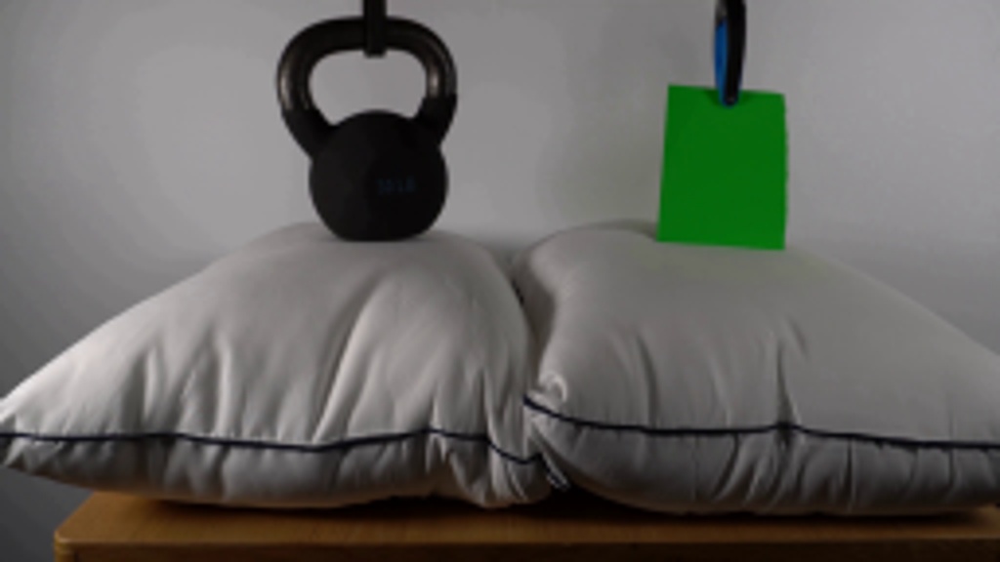
视觉工具实际返回图片 2
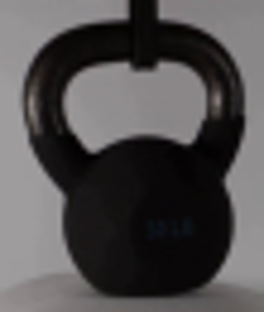
视觉工具实际返回图片 3
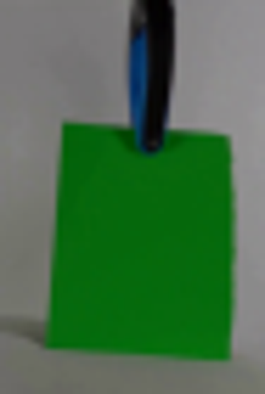
视觉工具实际返回图片 4
视觉工具实际返回图片 5
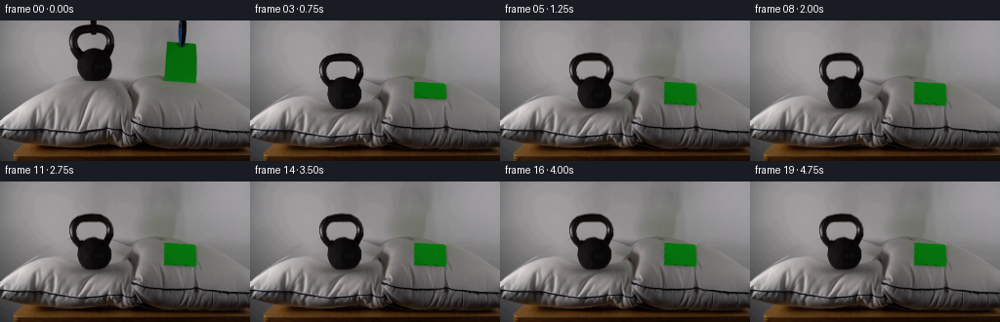
视觉工具实际返回图片 6
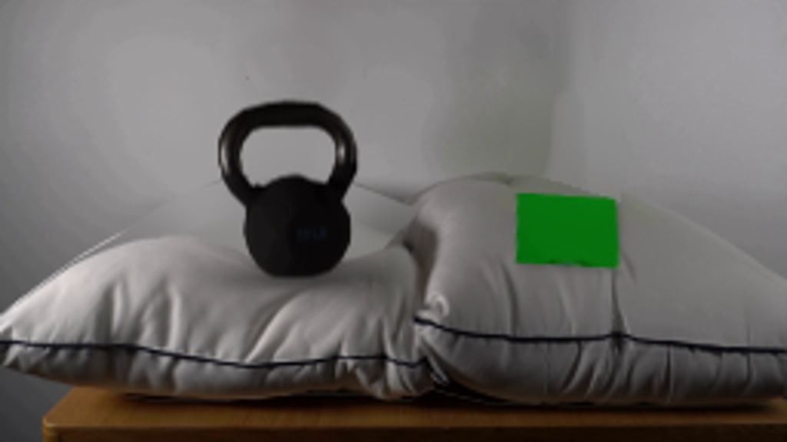
视觉工具实际返回图片 7
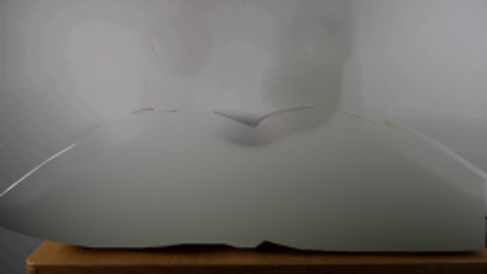
视觉工具实际返回图片 8
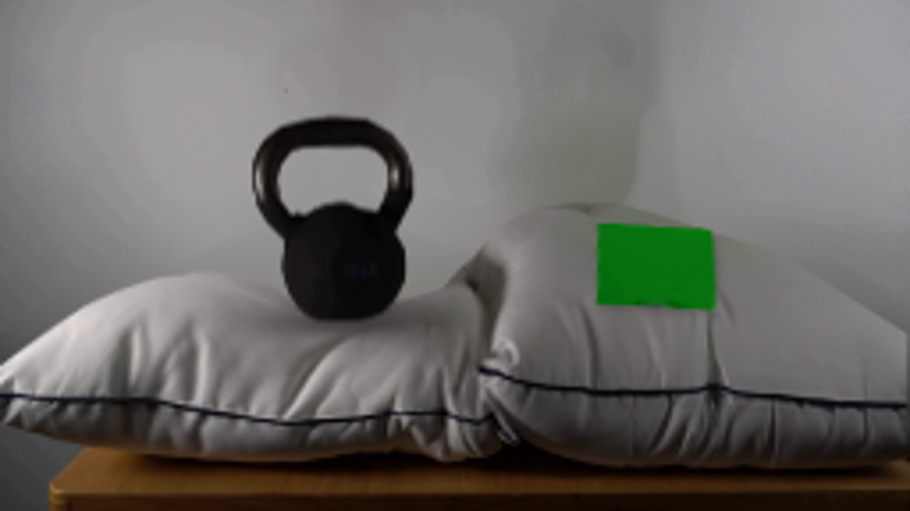
视觉工具实际返回图片 9
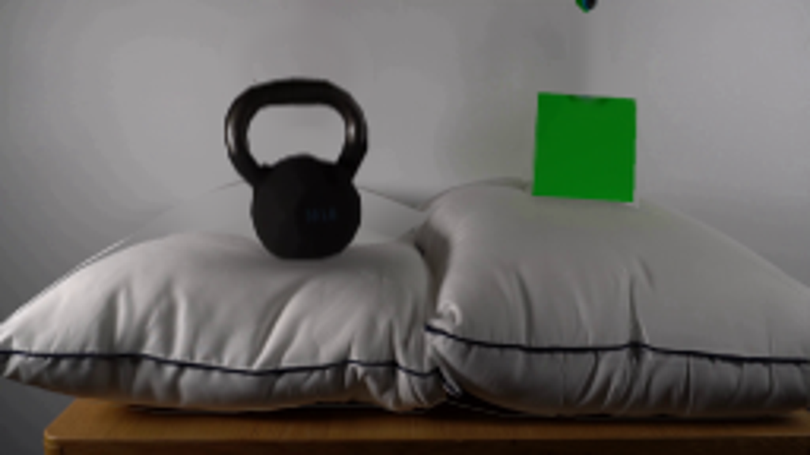
保存候选 2 份；完成命令 10 次；可验证图片返回 9 张。原始 API 响应与完整日志保留在本地。